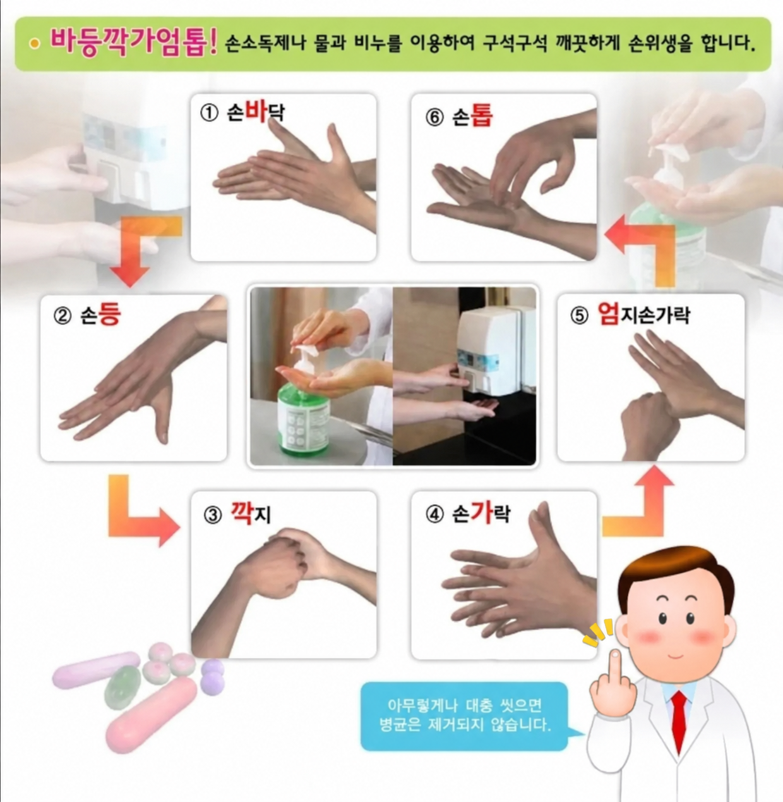
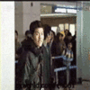

바등깍가엄톱!

바등깍가엄톱!
뽀큐뽀큐
ai네
근본없다고 해서 개열받았다고 함
ㅋㅋㅋㅋㅋㅋㅋㅋㅋㅋㅋㅋㅋㅋ

비트박스는 참 잘햇는데
바등깍가엄톱
어느 작은 마을에 ‘바등깍가엄톱’이라는 이름을 가진 소년이 살았다.
사람들은 이상한 이름이라며 놀렸지만, 소년의 어머니는 늘 말했다.
“네 이름에는 세상에서 가장 아름다운 뜻이 담겨 있단다.”
어느 겨울, 어머니가 세상을 떠났다.
소년은 어머니의 유품을 정리하다 낡은 편지 한 장을 발견했다.
바등깍가엄톱.
바라만 봐도 행복했던 너 등 뒤에서 언제나 지켜주고 싶었던 너 깍지를 끼고 평생 걷고 싶었던 너 가장 소중한 나의 선물 엄마가 세상에서 제일 사랑하는 너 톱니처럼 맞물려 영원히 함께할 우리
편지의 마지막에는 이렇게 적혀 있었다.
“사람들은 네 이름이 이상하다고 하겠지. 하지만 엄마에게는 네 이름을 부르는 여섯 글자마다 사랑한다는 말이 담겨 있단다.”
소년은 그날 처음으로 자신의 이름을 소리 내어 불렀다.
“바등깍가엄톱.”
그리고 울었다.
세상에서 가장 이상했던 이름이, 이제는 세상에서 가장 듣고 싶은 어머니의 목소리가 되었기 때문이다.
야 저새끼 이름 쟤네 엄마가 지어줬대
근데 또 손씻다보면 입에 붙음...


근본 없는 줄임말 젖보똥
담백하게 손씻기 요령 알려주기위한 줄임말이라 그냥 리스펙 해야지
근본이 없다기보다는 안 헷갈리는 글자들로 하나씩 가져온걸로 보이는데?
비트밖스가 진짜 미친놈이긴 해

근본없지만 인증 시즌에 외워야 함
근본은 모르겠고 보자마자 외워버렸는데??
두문자 존나 잘 지었는데??
빠큐하는거보니 AI네
바: 바둑이
등: 등껍질
깍: 까악까악
가: 가슴
엄: 엄준식
톱: 체인소맨
울라리 나올줄 알았네
의사는 뭔데 뻐큐함 ㅗ